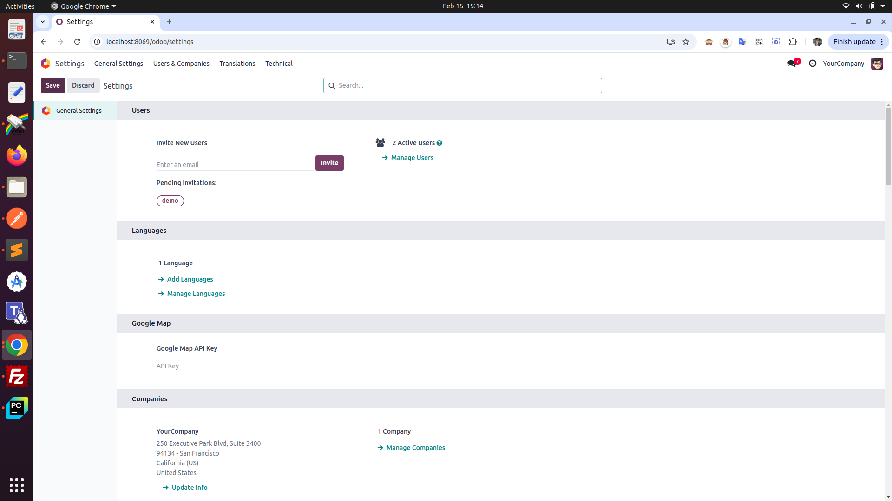
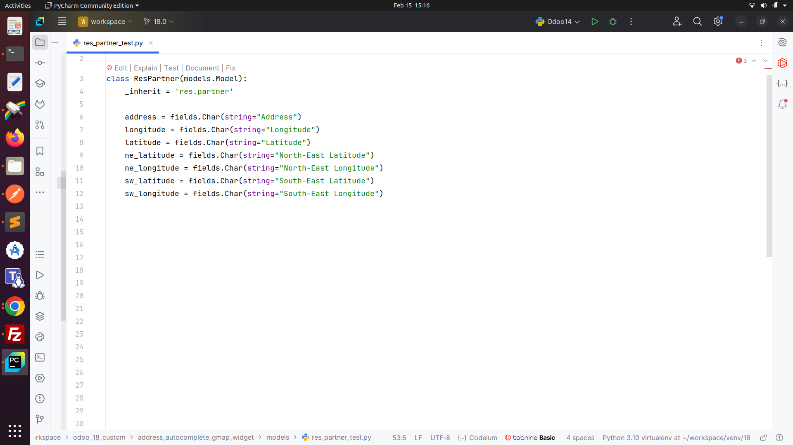
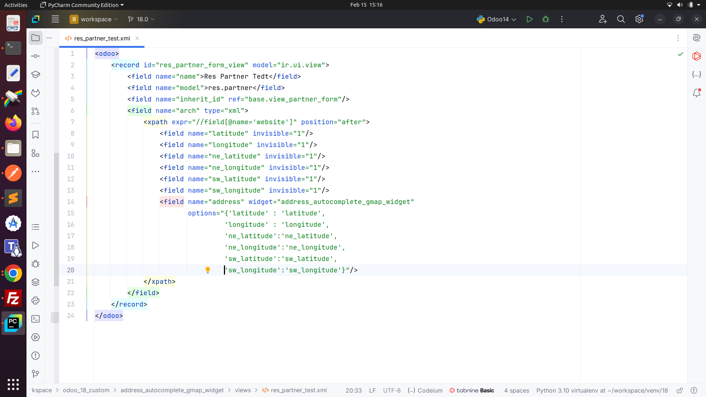
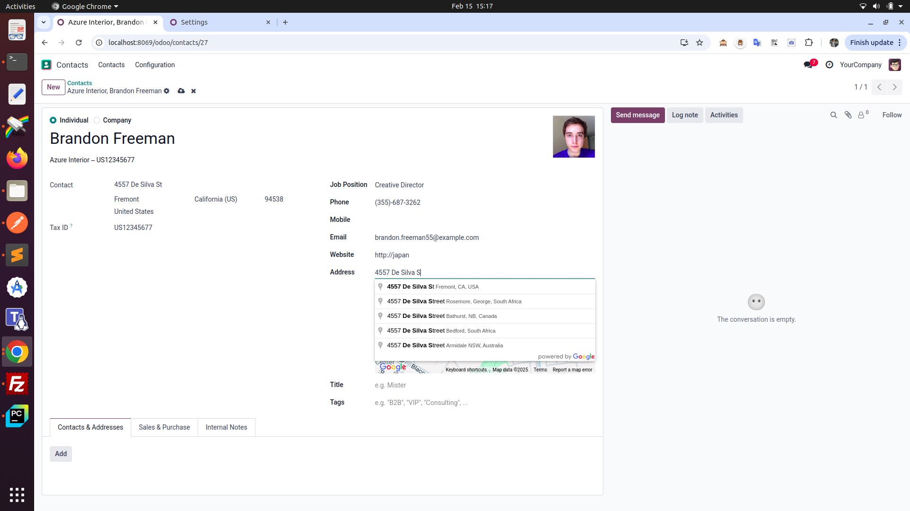
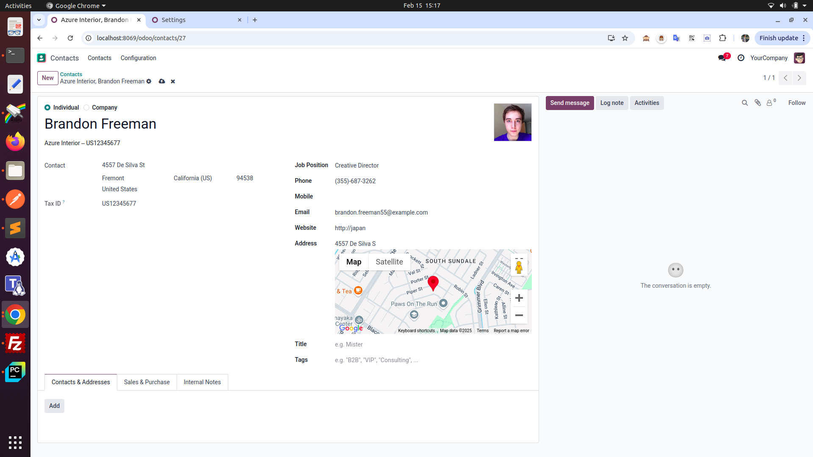

Google Map Address Autocomplete Widget
Overview
This module, address_autocomplete_gmap_widget, integrates Odoo version 18 with Google Map. Enhances Odoo address fields with real-time Google Maps address suggestions, improving data entry accuracy and speed. Retrieves detailed address components and geocodes addresses. Requires a Google Maps API key
Features
- Address Suggestions: Automatically suggests addresses as the user types in the input field. This helps avoid typos and ensures standardized, complete addresses.
- Search Accuracy: Provides highly accurate address suggestions based on Google's vast location data, including street names, cities, landmarks, and more.
- Interactive Map: Displays a Google Map, showing the selected address location with zoom and pan functionality.
- Auto-zooming and Centering: Once an address is selected, the map will automatically zoom in on the location and center the map to display the relevant area clearly.
- Latitude and Longitude:Along with the address, the module can capture and store the latitude and longitude coordinates of the selected address.
- Coordinate Storage: These coordinates can be stored in the Odoo model, allowing for easy retrieval and further usage.
Requirements
Google Map Api Key
Generate google map api key Docs.
Installation
To install the address_autocomplete_gmap_widget module, follow these steps:
- Place the module directory (
address_autocomplete_gmap_widget) in your Odoo addons path.
- In your Odoo instance, go to Apps and search for "Address Autocomplete Widget".
- Click "Install" to install the module.
Configuration
After installation, you need to configure the connection to the Google Mapi API.
- Go to the module's configuration settings (typically under Settings -> Google Map).
- Enter your Google Map API key. (Keep this secure!)
Example
Configure api key

Create a field for storing coordinate

How to use this field in view

How it's autocomplete address

How it's set marker on map

Support
For support or bug reports, please contact
- Gmail: dhrushilpatel2000@gmail.com
- Linkdin: www.linkedin.com/in/dhrushil-patel-72a42220a